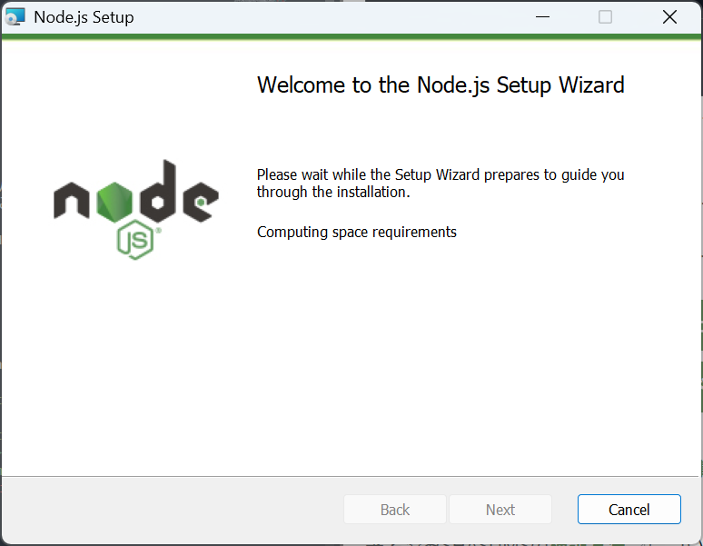

Chapter 1: Node.jsのインストールと準備
まずは、サーバーを動かすために必要なNode.jsをパソコンにインストールしましょう。
1. Node.jsのダウンロード
Node.js公式サイトにアクセスし、LTS版（推奨版）をダウンロードしてください。
特別な理由がなければ、安定版であるLTS版を選ぶのがおすすめです。
※画像はイメージです。実際のダウンロード画面と異なる場合があります。
2. インストーラの実行
ダウンロードしたインストーラを実行し、画面の指示に従ってインストールを進めます。特に設定を変更する必要がなければ、「Next」を押し続けてデフォルト設定で完了させてください。
3. インストール確認
インストールが完了したら、正しくインストールされたか確認してみましょう。
Windowsの場合: スタートメニューから「コマンドプロンプト」または「PowerShell」を開きます。
macOS / Linuxの場合: 「ターミナル」を開きます。
以下のコマンドを入力してEnterキーを押してください。
node -vNode.jsのバージョン（例: `v20.11.1` など）が表示されれば成功です。
npm -vnpmのバージョン（例: `10.2.4` など）が表示されれば成功です。
※画像はイメージです。